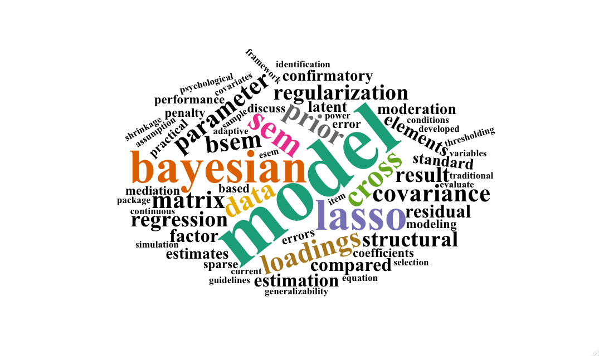

Book chapters
Computational Neuroscience and Cognitive Modelling (Anderson, 2014) (in Chinese, in press)
Translated it with members from Capital of Statistics, responsible for chapter 9-13 (Neural Networks).
Advanced Psychometrics and Latent Variable Modeling (in Chinese, in press)
Wrote the Bayesian Structural Equation Modeling chapter with Prof. Junhao Pan.
Journal articles
Notes: * correspondent author. Advances in Psychological Science was rated as one of the most influential Chinese journal, 2019 & 2020.
Highlight: 2,4,6
-
Wei, X., Huang, J. (co-first author), Zhang, L., & Pan, J.* (accepted). Evaluation and Comparison among SEM, ESEM and BSEM in Estimating Structural Models with Potentially Unknown Cross-loadings. Structural Equation Modeling: A Multidisciplinary Journal. [2020 IF: 6.125, JCR: Q1]
-
Zhang, L., Pan, J.*, & Ip, E.H. (2021). Criteria for Parameter Identification in Bayesian Lasso Methods for Covariance Analysis: Comparing Rules for Thresholding, p-value, and Credible Interval. Structural Equation Modeling: A Multidisciplinary Journal, 28(6), 941-950. [doi] [2020 IF: 6.125, Q1]
-
Zheng, S., Zhang, L., Qiao, X., & Pan, J.* (2021). Intensive Longitudinal Data Analysis: Models and Application. Advances in Psychological Science (in Chinese), 29(11), 1948-1969.
-
Zhang, L., Pan, J.*, Dubé, L., & Ip, E.H. (2021). blcfa: An R Package for Bayesian Model Modification in Confirmatory Factor Analysis. Structural Equation Modeling: A Multidisciplinary Journal, 28(4), 649-658. [doi] [2020 IF: 6.125, Q1]
-
Zeng, G., Zhang, L., Fung, S., et al. (2021). Problematic Internet Usage and Self-esteem in Chinese Undergraduate Students: The Mediation Effects of Individual Affect and Relationship Satisfaction. International Journal of Environmental Research and Public Health, 18(13), 6949. [doi] [2020 IF: 3.390, Q1]
-
Chen, J.*, Guo, Z., Zhang, L., & Pan, J.* (2021). A Partially Confirmatory Approach to Scale Development with the Bayesian Lasso. Psychological Methods, 26(2): 210-235. [doi] [2020 IF: 11.30, Q1] [my contribution]
-
Zhang, X., Zhang, L., Ding, Y., & Qu, Z.* (2021). Behavioral Oscillations in Attention. Advances in Psychological Science (in Chinese), 29(3): 461-471. [doi]
-
Feng, Q., Song, Q. (co-first author), Zhang, L. (co-first author), Zheng, S., & Pan, J.* (2020). Integration of Moderation and Mediation in a Latent Variable Framework: A Comparison of Estimation Approaches for the Second-stage Moderated Mediation Model. Frontiers in Psychology, 11: 2167. [doi] [2020 IF: 2.99, Q2]
-
Zhang, L., Wei, X., Lu, J., Pan, J.* (2020). Lasso Regression: From Explanation to Prediction. Advances in Psychological Science (in Chinese), 28(10): 1777-1788. [doi]
-
Liu, S., Huang, Z., Zhang, L., Pan, J., Lei, Q., Meng, Y., & Li, Z.* (2020). Plasma Neurofilament Light Chain may be a Biomarker for the Inverse Association between Cancers and Neurodegenerative Diseases. Frontiers in Aging Neuroscience, 12(10): 1-8. [doi] [2020 IF: 5.750, Q1]
-
Zhang, L., Lu, J., Wei, X., & Pan, J.* (2019). Bayesian Structural Equation Modeling and its Current Research. Advances in Psychological Science (in Chinese), 27(11): 1812-1825. [doi]
-
Zhang, L., & Liang, X.* (2021). Bayesian Regularization in MIMIC Models. International Meeting of the Psychometric Society (IMPS), 19-23 July, Virtual. [abstract] [slide]
-
Zhang, L., Pan. J*, & Ip, E.H. (2021). Comparison between Different Parameters Identification Criteria using the Bayesian Lasso. IMPS, 19-23 July, Virtual. [abstract] [slide]
-
Pan. J, Zhang, L., & Ip, E.H.* (2021). Bayesian Covariance Adaptive Lasso Factor Analysis Models with Ordinal Data. IMPS, 19-23 July, Virtual. [abstract]
-
Zhang, L., Pan, J.*, & Ip, E.H. (2020). blcfa: An R package for Bayesian Model Modification in Confirmatory Factor Analysis. IMPS, 14-17 July, Virtual. [abstract] [slide]
-
Zhang, L., Wei, X., Lu, J., & Pan, J.* (2019). Lasso Regression: From Explanation to Prediction. The 22nd Chinese Academic Conference of Psychology, 18-20 October, Hangzhou. [abstract] [slide]
-
Song, Q., Pan, J., & Zhang, L. (2019). Bayesian Multiple-group Analysis: Approximate Measurement Invariance. The 22nd Chinese Academic Conference of Psychology, 18-20 October, Hangzhou.
-
Zhang, L., Lu, J., Wei, X., & Pan, J.* (2019). Bayesian Structural Equation Modeling and its Current Research. The 22nd Chinese Academic Conference of Psychology, 18-20 October, Hangzhou. [abstract] [slide]
-
Zhang, L., & Pan, J.* (2019, Excellent Presenter). How to Select Prior Variance in Bayesian Approximate Measurement Invariance ? The 22nd Chinese Academic Conference of Psychology, 18-20 October, Hangzhou.[slide]
-
Zhang, L., & Pan, J.* (2019). How to Select Prior Variance in Bayesian Approximate Measurement Invariance ? The IMPS, 15-19 June, Santiago. [abstract] (accepted but wasn’t able to attend)
-
Zhang, L., Lu, J., Wei, X., & Pan, J.* (2019, Invited). Bayesian Structural Equation Modeling and its Current Research. The 12th Chinese R Conference, 24-26 May, Beijing. [slide]
-
Pan, J., Zhang, L., & Ip, E.H.* (2018). Bayesian Lasso Factor Analysis Models with Ordered Categorical Data. The 13th Cross-Straits Conference on Educational and Psychological Testing, 22-25 October, Taiwan. [slide]
-
Pan, J., Zhang, L., & Ip, E.H.* (2017). Bayesian Lasso Factor Analysis Models with Ordered Categorical Data. The 20th Chinese Academic Conference of Psychology, 3-5 November, Chongqing. [abstract]
-
Zhang, L., Lu, J., Zhang, Y., & Pan, J.* (2019). The Influence of Social Support on Career Decision-Making Difficulty: Bayesian Modeling Based on Longitudinal Data. The 22nd Chinese Academic Conference of Psychology, 18-20 October, Hangzhou. [abstract][poster]
-
Zhang, L., Lu, J., Zhang, Y., & Pan, J.* (2018, Excellent Presenter). The Influence of Social Support on Career Decision-Making Difficulty: A Moderated Mediation Model. Academic Forum on Psychology for the 21st Century, 24-26 March, Beijing.
-
Zhang, L. (2021). wordRG: An R Function for Extracting Abstracts from ResearchGate and Generating a Personal Research Word Cloud. Retrievable from https://github.com/zhanglj37/wordRG.
-
Zhang, L., Pan, J., & Ip, E.H. (2020). blcfa: An R Package for Bayesian Model Modification in Confirmatory Factor Analysis. Retrievable from https://github.com/zhanglj37/blcfa.
-
Zhang, L., Sun, R., & Pan, J. (2020). sampleMplus: An R Package for Sample Size Determination in Structural Equation Modeling. Retrievable from https://github.com/zhanglj37/sampleMplus.
Talks
Underline: presenter. Highlight: 12,15,22

![[poster]](share/180324_Beijing_ccmd.png){kind=link}